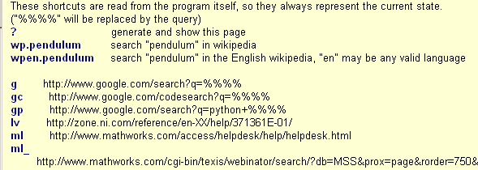

Brick Command-Shell ( december 2008 )
Application Designer / Domain Expert / Control Designer / Core Developer
Introduction
From the user point of view, it consists of two tab pages, an interactive shell, which can perform general IO and catch error messages, where you can perform calculations, keep notes and interact with the active environment. The second tab contains a general viewer, organized as a browser, where you can view all kinds of documents and webpages.
ToDo
Although there seems still a lot to be done, the command-shell is already a very powerful brick.
Interactive Command Shell
In fact the command shell is build around a standard Scintilla editor, so thereby it inherits all Scintilla's features, including automatic save and restore.
StdOut, StdErr
When the checkboxes are checked, program output and error messages are caught by this window. When the brick is closed, the message handlers are restored to the previous ones.
Autocompletion
If the checkbox is checked, all text you type in the command shell, will get (brute force) autocompletion and parameter suggestion features. When typing large amounts of comment this can be annoying, so you can disable the autocompletion with the checkbox.
Execute Code
When pressing enter after the last line, the command-shell grabs all code, starting at the end and going up until a line with zero indent is found. This code is executed in the environment's namespace. So depending on the program, you can often really interact with the running code. With Ctrl-Up en Ctrl-Down, you can step through previous given commands and select one.
Commands
If the last line starts with an ">" (without the quotes) at the very first location and has no indent, the rest of the line is send as a command to the main application. It's up to the main application what to do with the command, e.g. the application can send it to a debugger to control it's behavior.
Code Snippet
F7 invokes the standard code snippet manager, which is fully integrated.
Help
help can invoked in the standard Python way, but also with a starting question mark "?". So the following 2 code lines are identical
help ( wxPython )
?wxPython
General Viewer
The viewer with typical navigation buttons, can display a whole range of files: html (+ frames, +CSS), html-widgets, websites, pdf, MS-office-documents, pdf, ... at least this yields for the Windows Operating System. When used in another OS, it will use the default browser for files that can't be displayed with wx.html.HtmlWindow. So in that case the capabilities of the default browser will determine if a document can be viewed or not. The combobox keeps track of the history and is automatically saved and restored.
Another important feature of this browser, is the capability to use and create shortcuts (with or without search keyword).
General
You can just type an URL in the combobox. The prefix "http://" may be left out. Instead of an URL you can also type a local filename or use the browse button to locate a local file.
?
Typing just 1 simple question mark in the combobox, generates an actual information page, explaining all features, displaying all system and user settings and listing of visited pages.
Shortcuts
Here is an example of a shortcut list. The Wikipedia shortcuts are builtin and can not be changed. The shortcuts may look a bit cryptic, but it's important to realize that the user determines the shortcuts. Shortcuts are application wide, so creating them in own application, will make them available in other PyLab_Works applications.

For explaining the capabilities, we'll use the example of above. All commands are activated by pressing the Enter-key.
Using Shortcuts
To start a new Google search window, without a keyword search, we just type g
To search for wxPython with Google, we type g.wxPython
In the list above we see that getting pages from MathWorks (MatLab) we have 2 entries, one for opening the webpage without a keyword search ml and one shortcut for searching with a keyword ml_ .
So simply going to MathWorks, is done by ml
And searching the MathWorks site, is done by ml_.pendulum
Adding Shortcuts
Adding (or replacing) shortcuts is very simple, just use a two points and type the full URL, and if needed with a placeholder for the search term. So if we want to create a new shortcut, p, that performs a search on the python site, we should type:
p..http://google.com/search?domains=www.python.org&sitesearch=www.python.org&sourceid=google-search&q=%%%%
And now we search the python site, with p.dictionary
Deleting Shortcuts
To remove the above created python search shortcut, simply type p..
Handling File-Types
|
URL / file type |
Windows |
Linux |
|
local html |
HtmlWindow |
HtmlWindow |
|
local html with wxWidgets |
HtmlWindow |
HtmlWindow |
|
local html with CSS |
HtmlWindow |
HtmlWindow |
|
http:// |
embedded IE |
external default browser should become WebKit |
|
txt, dat |
embedded IE |
? |
|
doc, xls, ppt |
embedded IE |
N.A. |
|
swf |
embedded IE |
? |
|
|
embedded IE |
? |
|
chm |
external |
? should become chmlib |
N.A. = Not Available
embedded IE, should be replaced by webkit
No solution found yet to embed CHM under windows.
{kind=link}
{kind=link}